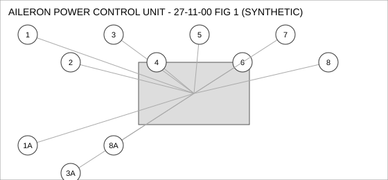
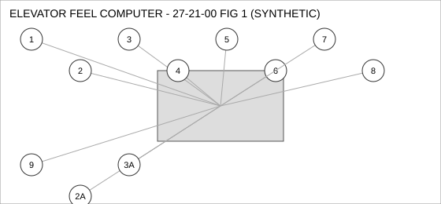
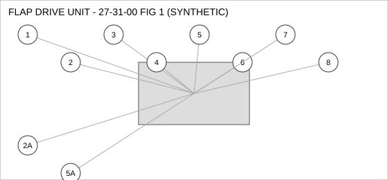
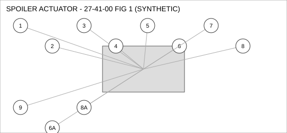

Document type: IPC | Revision: 15 | Fleet: B737
| CODE | AIRCRAFT |
|---|---|
| A | 737-700 |
| B | 737-800 |
| C | 737-MAX8 |

| FIG ITEM | PART NUMBER | NOMENCLATURE | EFFECT | UPA |
|---|---|---|---|---|
| 1 | 162-31632-27 | CLAMP - V-BAND, AILERON POWER CONTROL UNIT | C | 2 |
| 1A | 60-83920-07 | CLAMP - V-BAND, AILERON POWER CONTROL UNIT | C | 2 |
| INTERCHANGEABLE WITH 162-31632-27 (TWO-WAY). | ||||
| 2 | 285-13534-13 | BRACKET - MOUNTING, AILERON POWER CONTROL UNIT | A | 4 |
| 3 | 60-94246-14 | CONNECTOR - ELECTRICAL, AILERON POWER CONTROL UNIT | C | 1 |
| 3A | 60-31465-10 | CONNECTOR - ELECTRICAL, AILERON POWER CONTROL UNIT | C | 1 |
| INTERCHANGEABLE WITH 60-94246-14 WHEN SB 27-1042 IS EMBODIED. | ||||
| 4 | 69-59689-11 | NUT - SELF-LOCKING, AILERON POWER CONTROL UNIT | ALL | 1 |
| 5 | 162-46471-25 | VALVE - CHECK, AILERON POWER CONTROL UNIT | ALL | 2 |
| 6 | 162-12540-24 | SWITCH - PRESSURE, AILERON POWER CONTROL UNIT | A B | 4 |
| 7 | 69-39389-21 | ACTUATOR - LINEAR, AILERON POWER CONTROL UNIT | A | 1 |
| 8 | 60-42411-07 | HOSE ASSEMBLY, AILERON POWER CONTROL UNIT | ALL | 1 |
| SUPERSEDED BY 65-23356-23 | ||||
| 8A | 65-23356-23 | HOSE ASSEMBLY, AILERON POWER CONTROL UNIT | ALL | 1 |
| SUPERSEDES 60-42411-07. 60-42411-07 IS NOT INTERCHANGEABLE WITH THIS PART (ONE-WAY). | ||||

| FIG ITEM | PART NUMBER | NOMENCLATURE | EFFECT | UPA |
|---|---|---|---|---|
| 1 | 162-23833-14 | VALVE - SHUTOFF, ELEVATOR FEEL COMPUTER | ALL | 1 |
| 2 | 162-30052-14 | PUMP - TRANSFER, ELEVATOR FEEL COMPUTER | B C | 1 |
| SUPERSEDED BY 162-68743-26 | ||||
| 2A | 162-68743-26 | PUMP - TRANSFER, ELEVATOR FEEL COMPUTER | B C | 1 |
| SUPERSEDES 162-30052-14. 162-30052-14 IS NOT INTERCHANGEABLE WITH THIS PART (ONE-WAY). | ||||
| 3 | 69-90728-26 | GASKET, ELEVATOR FEEL COMPUTER | ALL | 4 |
| SUPERSEDED BY 65-50135-22 | ||||
| 3A | 65-50135-22 | GASKET, ELEVATOR FEEL COMPUTER | ALL | 4 |
| REPLACES 69-90728-26. THIS PART MAY REPLACE 69-90728-26; 69-90728-26 MAY NOT BE USED TO REPLACE THIS PART. | ||||
| 4 | 285-45179-11 | CONNECTOR - ELECTRICAL, ELEVATOR FEEL COMPUTER | ALL | 1 |
| 5 | 162-41963-25 | SOLENOID, ELEVATOR FEEL COMPUTER | ALL | 2 |
| 6 | 162-54092-01 | SENSOR - TEMPERATURE, ELEVATOR FEEL COMPUTER | C | 2 |
| 7 | 65-56507-26 | ACTUATOR - LINEAR, ELEVATOR FEEL COMPUTER | ALL | 1 |
| 8 | 285-46211-18 | VALVE - CHECK, ELEVATOR FEEL COMPUTER | ALL | 1 |
| 9 | 60-41635-24 | HOSE ASSEMBLY, ELEVATOR FEEL COMPUTER | B C | 2 |

| FIG ITEM | PART NUMBER | NOMENCLATURE | EFFECT | UPA |
|---|---|---|---|---|
| 1 | 65-35105-07 | DUCT - FLEXIBLE, FLAP DRIVE UNIT | ALL | 2 |
| 2 | 285-88222-10 | BRACKET - MOUNTING, FLAP DRIVE UNIT | C | 1 |
| 2A | 69-21164-08 | BRACKET - MOUNTING, FLAP DRIVE UNIT | C | 1 |
| INTERCHANGEABLE WITH 285-88222-10 (TWO-WAY). | ||||
| 3 | 69-33519-10 | CLAMP - V-BAND, FLAP DRIVE UNIT | ALL | 1 |
| 4 | 69-15965-02 | SENSOR - PRESSURE, FLAP DRIVE UNIT | ALL | 4 |
| 5 | 65-93606-28 | SEAL - FLANGE, FLAP DRIVE UNIT | C | 2 |
| SUPERSEDED BY 162-68028-10 | ||||
| 5A | 162-68028-10 | SEAL - FLANGE, FLAP DRIVE UNIT | C | 2 |
| REPLACES 65-93606-28. THIS PART MAY REPLACE 65-93606-28; 65-93606-28 MAY NOT BE USED TO REPLACE THIS PART. | ||||
| 6 | 285-47268-16 | ACTUATOR - LINEAR, FLAP DRIVE UNIT | B C | 2 |
| 7 | 60-43092-28 | HOSE ASSEMBLY, FLAP DRIVE UNIT | ALL | 2 |
| 8 | 162-74454-03 | PUMP - TRANSFER, FLAP DRIVE UNIT | A B | 4 |

| FIG ITEM | PART NUMBER | NOMENCLATURE | EFFECT | UPA |
|---|---|---|---|---|
| 1 | 60-63545-15 | SENSOR - PRESSURE, SPOILER ACTUATOR | ALL | 4 |
| 2 | 65-47762-23 | SEAL - FLANGE, SPOILER ACTUATOR | ALL | 1 |
| 3 | 60-40595-09 | SOLENOID, SPOILER ACTUATOR | B C | 4 |
| 4 | 65-65723-04 | BRACKET - MOUNTING, SPOILER ACTUATOR | A B | 4 |
| 5 | 69-28643-03 | SENSOR - TEMPERATURE, SPOILER ACTUATOR | C | 1 |
| 6 | 285-84607-10 | SEAL - O-RING, SPOILER ACTUATOR | A B | 2 |
| 6A | 65-71669-17 | SEAL - O-RING, SPOILER ACTUATOR | A B | 2 |
| INTERCHANGEABLE WITH 285-84607-10 (TWO-WAY). | ||||
| 7 | 69-62757-09 | CLAMP - V-BAND, SPOILER ACTUATOR | ALL | 4 |
| 8 | 60-88385-02 | GASKET, SPOILER ACTUATOR | ALL | 2 |
| SUPERSEDED BY 162-21959-16 | ||||
| 8A | 162-21959-16 | GASKET, SPOILER ACTUATOR | ALL | 2 |
| REPLACES 60-88385-02. THIS PART MAY REPLACE 60-88385-02; 60-88385-02 MAY NOT BE USED TO REPLACE THIS PART. | ||||
| 9 | 69-13390-03 | HOSE ASSEMBLY, SPOILER ACTUATOR | ALL | 1 |